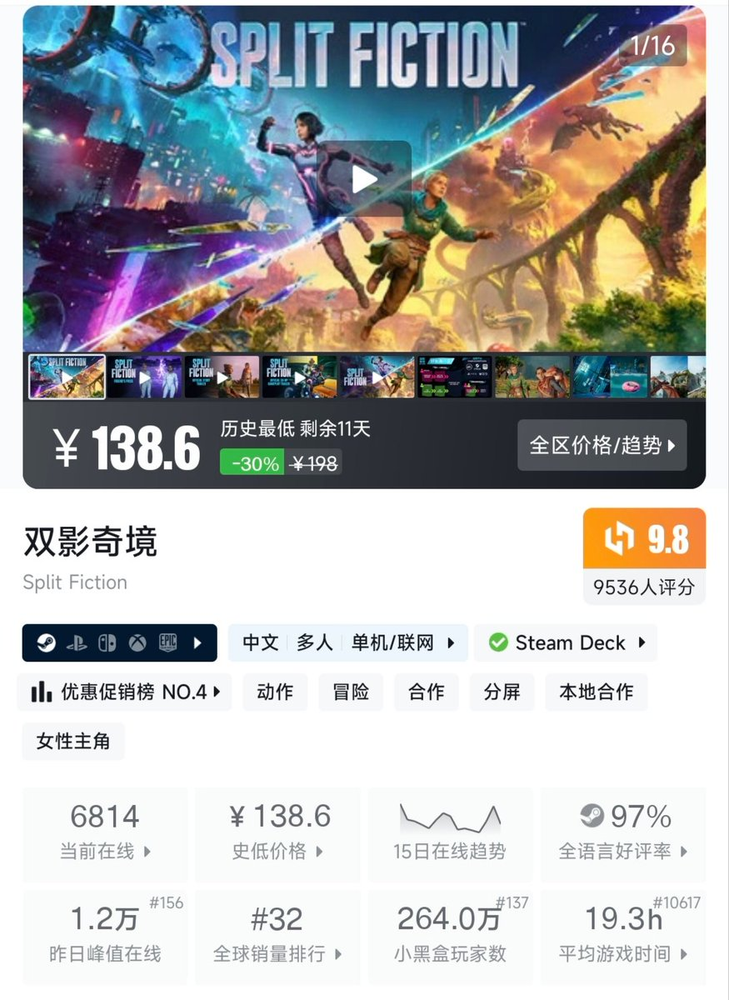
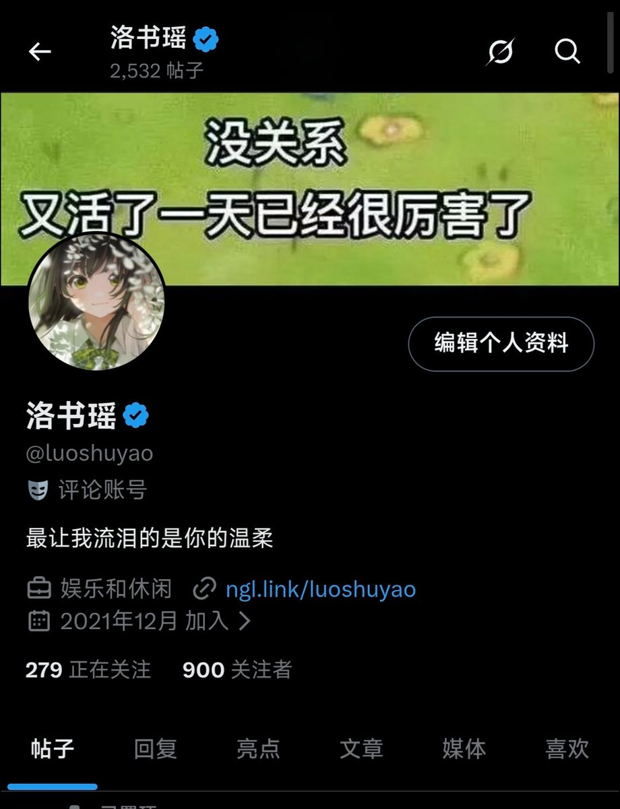

洛书瑶
@luoshuyao
你们怎么敢推这么贵的游戏😭
我只是一个牛马打工人，家里很穷，甚至负债。只是我没有负债，给自己花钱很少而已。我自己玩都不敢买超一百块钱的，买的最贵的也就是荒野大镖客2，打折70块钱，犹豫了很久咬咬牙买的😭


洛书瑶
@luoshuyao
哇重回月初的关注量。因为双取了很多不感兴趣的（比如币圈）和纯搬运的账号，这个月还有很多账号被封禁，不然应该能到1000😌
好像现在被关注总是没有消息通知，我都不知道什么时候被谁关注了，突然就到900了。
打算送游戏，各位有没有什么推荐的？ https://t.co/3cxohsPk2L